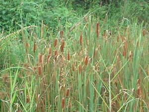

kuwitis 
/kuwitis/
n.
a plants growing in a swampy areas
Ka seini ne hilamunen diyè egtubu te lasak-lasak ne matul-id se dewun wey due malalab diyè te pulipusan ne iyan egpuunan te behas.
Ka buyag e ne kuwitis su eglayap e ka behas.
An old kuwitis plants are usually floating the seeds.
Eng. plants; grass
OCM: Flora (137)
DDP: Grass, herb, vine (1.5.3), Plant (1.5)
Online dict status: -
Usage level: M
Created: 20/May/2009
Updated by: QDL
Last updated: 13/Oct/2009
This page last updated: 19/May/2012
Copyright © 2009-2010, Matigsalug Language Christian Association, Inc